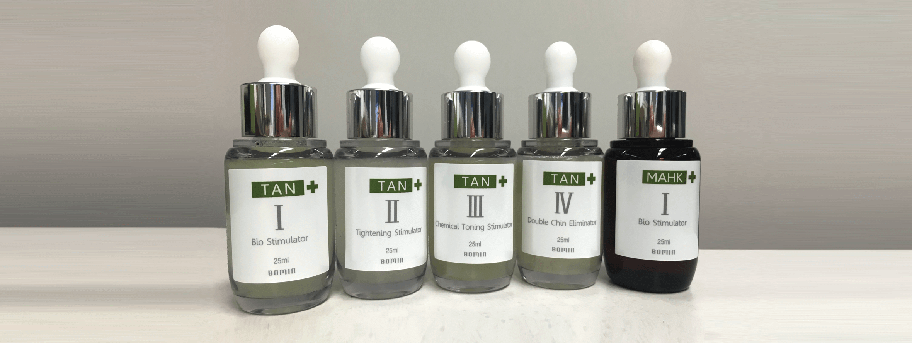

나노과학으로 완성된
진정한 피부 재생술
#TAN
박피술
바이오 나노입자를 이용한 알칼리 박피 시술
연세자연美 TAN이란?
탄 TAN(True Alkali Natural Biostimulator)은 피부의 재생을 돕는 피부재생 시술로
대부분 필링이 산성 화학물질을 사용하는 반면발효 알칼리를 사용하는 것이 특징입니다.
주름 개선효과가 탁월하며 색소침착, 알레르기성 피부 질환 치료 및 피부탄력 효과를 동시에 얻을 수 있습니다.

TAN 박피술의 특징
- VS
- 천연 발효물질에서 추출된 TAN 나노재생물질은
피부 장벽의 지질과 친화력이 있어
피부 장벽을 통과하여 콜라겐 형성을 자극하고 촉진.
각질층을 벗겨내지 않고 시술. - 시술
- 통상적 약물이 피부장벽내로 함입되어
효과를 나타내는데 한계가 있음.
약품을 피부장벽내로 투입하여 효과를
나타내기위해각질층을 벗겨내는 형태로 진행.
- 통증이 적으며, 바로 일상생활 가능.
피부가 붉어지는 증상이 없음. - 시술 후
- 상피층의 재생 과정이 길고,
피부가 붉어지는 증상이 생김.
자외선으로 인한 색소침착이 생길 수 있음